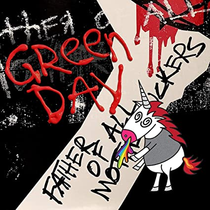

Latest Release! |
Video |
|
|  |
Father of All.../ファーザーオブオール...
グリーン・デイが約3年ぶりの オリジナルアルバムを発売！ 2020.02.07 発売 ￥2,300+税／WPCR-18306 |
BAND MEMBER
ビリー・ジョー・アームストロング (Vo/G)
マイク・ダーント (B)
トレ・クール (Dr)
1986年、カリフォルニア州バークレーにて結成。1994年にメジャー・デビュー・アルバム『ドゥーキー』リリース、この作品を以てして＜パンク・ロック＞をメインストリームなものへと成し遂げ、全世界的なパンク・ムーヴメントを巻き起こした。1996年には初の来日公演を敢行。以降のアルバム『インソムニアック』『ニムロッド』『ウォーニング』ではミリオンヒット・プラチナヒットを連発。2004年リリースのアルバム『アメリカン・イディオット』は、ロック・オペラというフォーマットを用いながら、アメリカが内包している社会問題に関して深いメッセージを残し、音楽的にもカルチャー的としても大きな影響を与えた意欲作となった。全世界1,500万枚の売り上げを記録。更にはグラミー最高賞である「最優秀レコード賞」を「ブールヴァード・オブ・ブロークン・ドリームス」にて獲得。文字通り、パンク史上初の快挙を成し遂げた。 2009年、『21世紀のブレイク・ダウン』をリリース。14ヶ国で1位を記録。2010年にはブロードウェイ・ミュージカル「American Idiot」がNYブロードウェイにて上演された。2012年は、『ウノ！』『ドス！』『トレ！』という3部作を2ヶ月毎に発表するという画期的なリリース手法にて話題を呼んだ。 2015年にはロック・ミュージックへの貢献を評価され、ロックの殿堂入りを果たした。 2016年、『レボリュ―ション・レディオ』リリース、全米、全英で1位に輝いた。同年、ビリー・ジョー初主演の映画「Ordinary World」が公開され、中年パンク・ロッカーという本人ともある種、重なる難しい役柄を見事に演じ切った。 2017年、これまでのアルバムより代表曲を網羅したベスト・アルバム『グレイテスト・ヒッツ：ゴッズ・フェイバリット・バンド』をリリース。 そしてスタジオ・アルバムとしては通算13枚目となるニュー・アルバム『ファザー・オブ・オール…』を2020年2月7日（金）にリリースすることを発表した。 過去5回のグラミー賞受賞歴を誇り、全世界で通算7,000万枚以上のアルバム・セールス、ストリーミング等の合計再生回数で約100億回を誇る、名実ともに21世紀を代表するロック・バンドの一つである。
NEWS
3/25 2020 |
3月27日、28日にLINE LIVEにてミュージック・ビデオ特集番組の配信決定！ここだけの未公開インタビュー映像も！ 過去5回のグラミー賞受賞歴を誇り、全世界で通算7,000万枚以上のアルバム・セールス、ストリーミング等の合計再生回数で約100億回を誇る、名実ともに21世紀を代表する... |
3/2 2020 |
3/25(水)インテックス大阪、3/27(金)、28(土)幕張メッセにて予定しておりましたグリーン・デイの来日公演は、新型コロナウイルス感染症の影響を考慮し、アーティスト側との協議の結果... |
2/7 2020 |
【※3/11追記】最新アルバム『Father of All…』本日発売！暗闇フィットネス®のパイオニアFEELCYCLEとのコラボも決定！ FEELCYCLEとGreen Dayのコラボレーションプログラム「BB2 GRDY」の実施は延期となりました。変更後の日程については、FEELCYCLEオフィシャルサイトでチェックしてください。■FEE... |
2/3 2020 |
スペースシャワーTVにてミュージックビデオ特集＆貴重なインタビュー映像をオンエア！ 2月7日に13作目となる待望のニュー・アルバム『ファザー・オブ・オール…』をリリースするグリーン・デイ。3月には8年ぶりとなる来日公演の開催が決定している彼らのミュージックビデオ... |
| ・ | |
| ・ | |
| ・ |